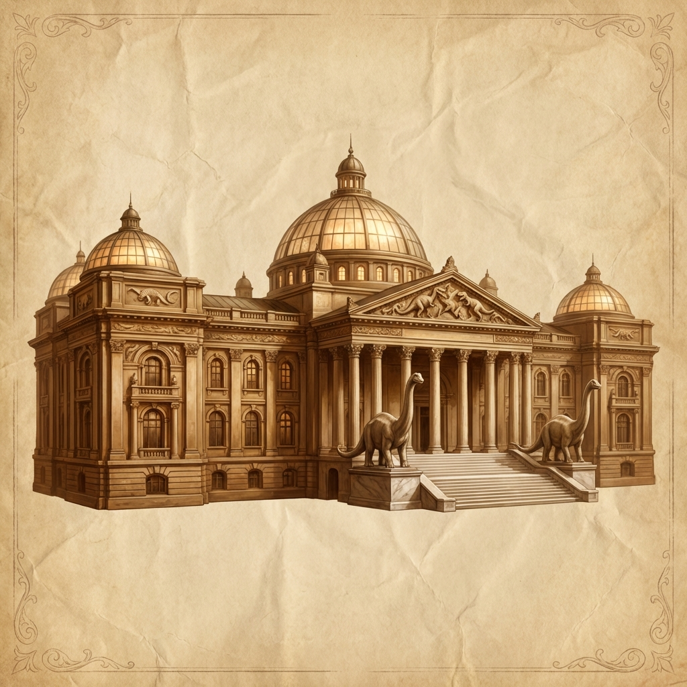

🏛️ Varkenbluff Museum of Natural History
The city's premier showcase of archaeology, natural wonders, and stolen eldritch horrors
Overview
The Varkenbluff Museum of Natural History stands as the crown jewel of the city's academic district. Its marble facade and enormous columns speak to the wealth and prestige of the institution. The museum houses artifacts from across the region, including items from the Murkmire dig site and displays curated in close partnership with Varkenbluff University.
The museum's Gemstone Wing was the site of the infamous gala where the Murkmire Stone was nearly hatched—and subsequently stolen by the heist team.
Location
Physical Details
Exterior
The facade of the Varkenbluff Museum of Natural History boasts enormous columns and elegant archways hewn from marble. Cosmopolitan visitors bustle about the entrance.
Interior
- Stone walls and tiled floors throughout
- 15-foot ceilings with decorative moldings
- Glass display cases for smaller artifacts
- Open exhibit halls for larger pieces (dinosaur skeletons, cultural recreations)
Key Areas
Key NPCs
| NPC | Role | Notes |
|---|---|---|
| Alda Arkin | Museum Curator (elf, neutral evil) | Retired professor; close ties to university; potentially corrupt |
| Captain Maryam Bikram | City Watch | Stationed at gala entrance |
⚔️ Session History
- ✓ Heist team infiltrated during opening gala
- ✓ Murkmire Stone stolen
- ✓ Animated dinosaur skeleton chaos